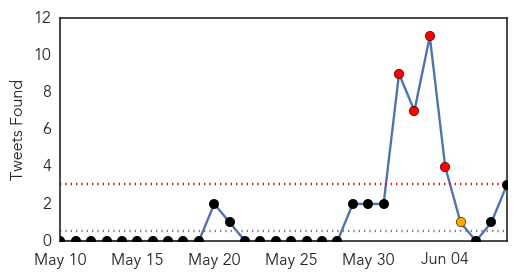
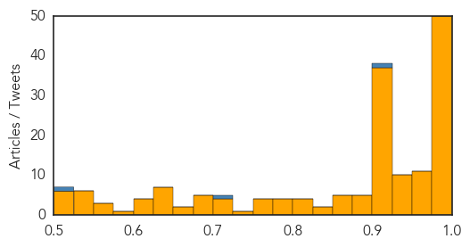
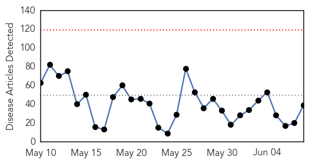

Unknown
30-Day Web Trend
4 alerts, 1 warnings

30-Day Twitter Trend
4 alerts, 4 warnings

Article Locations

Article Confidences
Top Articles:
- 1.000
- The World On Arirang
- 1.000
- South Korea Reports Fifth MERS Death, 14 More Cases
- 1.000
- Is the MERS virus likely to reach the UK? How worried we should be as sixth person dies in South Korea
- 0.999
- MERS Virus Claims Another Victim in South Korea
- 0.999
- Top Korean hospital new source of MERS outbreak, news, Health News, AsiaOne YourHealth
- 0.999
- South Korea MERS Cases Rise as Hong Kong Increases Alert Level
- 0.999
- (LEAD) S. Korea reports 23 new cases of MERS, bringing total to 87
- 0.999
- S. Korea reports sixth death from MERS, 23 new cases
- 0.999
- Case Total Rises to 87, South Korea to Track Cellphones to Prevent the Spread
- 0.999
- UN Sending Officials to South Korea as 2300 Quarantined over MERS Outbreak
- 0.999
- MERS Outbreak in South Korea Increasing but Not Spreading
- 0.999
- The World On Arirang
- 0.999
- MERS outbreak in South Korea increasing but not spreading
- 0.999
- CDC Urges Health Officials To Watch For Bird Flu In Humans
- 0.998
- South Korea records sixth death from Mers
- 0.998
- MERS outbreak in South Korea
- 0.998
- MERS Outbreak in South Korea Closes Schools
- 0.998
- Over 2,300 quarantined, 1,800 schools closed in S Korea over MERS
- 0.997
- Samsung group chairman won’t leave infected hospital as MERS hits South Korea
- 0.997
- 6th MERS Death Reported in South Korea
- 0.996
- MERS infections in S. Korea surge to 87 with 23 new cases - Xinhua
- 0.996
- MERS outbreak: 2,300-plus quarantined; 1,800 schools closed in South Korea
- 0.996
- S.Korea reports 23 new MERS infections, 1 more death
- 0.994
- MERS Outbreak Worsens in South Korea
- 0.994
- MERS proves fatal to severely ill
- 0.994
- MERS Virus in South Korea Intensifies, Seoul Schools Close Down
- 0.994
- 6th person dies from virus in South Korea
- 0.993
- [Editorial] Cooperation with WHO
- 0.992
- S.Korea MERS outbreak: 2,300 quarantined; 1,300 schools closed
- 0.991
- South Korea reports jump in MERS infections, sixth patient dies
- 0.988
- South Korea Using Cellphones to Curb Spreading, 2,300 Quarantined & 87 Cases Reported
- 0.988
- The World On Arirang
- 0.988
- MERS Virus kills Sixth Person in South Korea
- 0.987
- Sixth fatality in South Korea's 'MERS' outbreak
- 0.986
- WHO team joins fight against MERS
- 0.985
- Asia on high alert over possible MERS spread, Others news, Health News, AsiaOne YourHealth
- 0.985
- 23 New MERS Cases in S. Korea
- 0.985
- China trying to reach 13 people near MERS patient
- 0.984
- Thailand’s Public Health MERS ready
- 0.984
- Gov't checks travel history of contact with MERS patients
- 0.983
- USFK warns against visiting Korean hospitals amid MERS outbreak
- 0.983
- USFK warns against visiting Korean hospitals amid MERS outbreak
- 0.981
- Yonhap News Summary
- 0.980
- Teenager becomes first MERS-infected SKorean student
- 0.980
- KBS World Radio
- 0.979
- South Korea vows ‘all-out’ effort to curb growing MERS outbreak
- 0.978
- Sixth Mers death in South Korea as more cases emerge
- 0.977
- A critical view from Hong Kong
- 0.976
- See How Lovers Carry on With The MERS Epidemic In South Korea (Photos)
- 0.976
- KBS World Radio
Showing top 50 articles...
Top Tweets:
- 0.883
- RT: The number of people in MERS quarantine rises to 2,508; 583 cleared: Health Ministry MERS Korea
- 0.703
- RT: Seven people dead and 95 confirmed cases of Middle East respiratory syndrome, or MERS, in South Korea, officials say.http://t.c…
- 0.636
- Avian Flu Diary: Korea Adds 23 More MERS Cases http://t.co/l9tUVlGP8Z
- 0.615
- Nearly 1/3 of women hospitalized with lab-confirmed flu during 14-15 season were pregnant. Read more here: http://t.co/mcjQtDAcZA
- 0.530
- South Korea reports 23 new cases of MERS virus, total rises to 87 http://t.co/c9uZWZ6Z0r
- 0.515
- RT: MERS....Middle East Respiratory Syndrome....we need to pay attention. Not much known about Mers but appears deadly. https:…
Ebola
30-Day Web Trend
0 alerts, 0 warnings

30-Day Twitter Trend
0 alerts, 0 warnings

Article Locations

Article Confidences

Top Articles:
- 1.000
- Fourth patient dies of MERS in South Korea
- 1.000
- Philippine News
- 0.995
- Ebola outbreak thrusts MSF into new roles
- 0.994
- Twitter users share four billion Ebola messages in a week
- 0.994
- Guinea Extends Ebola Emergency Measures Until the End of June
- 0.993
- MERS cases in South Korea rise to 87, with six deaths
- 0.993
- Preventing the next global pandemic
- 0.988
- The Salvation Army in Canada Ebola Crisis Team Continues Work in West Africa
- 0.976
- Volta NDC kicks against Ebola vaccine trial in Hohoe
- 0.973
- Can Statins Help Treat Ebola?
- 0.967
- NDC says no to "needless" Ebola vaccines trial in V/R
- 0.964
- MERS temporarily not threat to China: expert - Xinhua
- 0.960
- G7 warned world remains unprepared for pandemics
- 0.954
- Experts agree to develop robust blood transfusion services in Ebola affected and unaffected countries - Sierra Leone
- 0.942
- UNMEER Chief Thanks President Mahama For Extraordinary Leadership And Solidarity
- 0.927
- MERS cases in Columbia rise to 87, with six deaths
- 0.920
- Grand Bassa Midwife - Nurses Trainer
- 0.919
- Liberia/Guinea Hold 2nd Cross-Border Ebola Surveillance Meeting Coordinated by Global Communities
- 0.909
- ‘’THE THREAT OF ANOTHER OUTBREAK FROM A VACCINE PREVENTABLE DISEASE IS REAL’’ HEALTH MINISTER WARNS!
- 0.886
- Back From Ebola to Teach the Next Generation
- 0.866
- World Health Experts Ask G7 Countries to Create Infection Rapid Response Unit
- 0.859
- Sierra Leone News: ‘Sierra Leone in dire need of medical specialists’-Dr. Gooding « Awoko Newspaper
- 0.827
- donga.com[English donga]
- 0.808
- Liberia prepares for border surveillance
- 0.804
- Jenner media circus fueled by cash, not rights
- 0.803
- Beyond Ebola: Laying the foundation for Caribbean regional health security
- 0.793
- Amb. Zhao commends Journalists for ebola fight « Awoko Newspaper
- 0.790
- Three Nightmare Health Threats and How to Wake Up
- 0.782
- There Will Now Be An Actual Public Health Class On FX's 'The Strain'
- 0.780
- Zuriel Oduwole interviews her 15th world leader, President Alpha Conde of Guinea
- 0.759
- US to Invest US$57.2M in Health Sector
- 0.736
- Strengthening human resources for health systems resilience to care for mothers and children
- 0.696
- Pres. Sirleaf congratulates Sweden
- 0.660
- No reports of MERS in N.K. yet
- 0.629
- Beyond Ebola, laying foundations for Caribbean regional health security
- 0.622
- Sierra Leone journalists at daggers drawn over Ebola money
- 0.601
- The Doctor Who Contracted Ebola Is Feeling Fine -- NYMag
- 0.584
- Hallan cadáver por inundaciones en Texas y cifra de fallecidos aumenta a 23
- 0.542
- Sierra Leone News: SLAJ Kenema meet …Salone media contributes $1m to ebola fight-SLAJ Prexy « Awoko Newspaper
Top Tweets:
- 0.975
- G7 underwhelms with Ebola response - Politico http://t.co/hxDCBE2gZm ebola EVD
- 0.945
- Ebola en Guinée : "urgence sanitaire renforcée" étendue à de nouveaux départements - fin juin http://t.co/VUh0vyVGTo
- 0.921
- Minnesota man helps fight Ebola in West Africa - Post-Bulletin http://t.co/o1uWLZlagP ebola EVD
- 0.862
- Ebola Update: 27,189 confirmed, probable & suspected cases reported in 3 most affected countries, with 11,149 deaths. EbolaResponse
- 0.853
- .@WHO publishes Ebola diaries with accounts from Ebola first responders http://t.co/GBCGHJXRap
- 0.842
- In this outbreak, Ebola spread quicker than time available for addressing beliefs. Many communities changed only once affected.
- 0.841
- G7 states vow to wipe out Ebola but offer little concrete action - Reuters http://t.co/znhnnNJ0zP ebola EVD
- 0.821
- Health system strengthening needed to build resilient health systems that can respond and react to outbreaks such as Ebola G7Summit
- 0.815
- Here's the Difference Between MERS and Ebola - TIME http://t.co/um2JFY3EIs ebola EVD
- 0.794
- Sophie, Countess of Wessex meets Army nurse Anna Cross cured of Ebola - Daily Mail http://t.co/wpGF9aAIyq ebola EVD
- 0.778
- From today's Situation Report -> 12 new Ebola cases in SierraLeone last week https://t.co/HNZNNlWxk8 EbolaResponse
- 0.772
- L'épidémie d'Ebola « persiste » en Guinée et en SierraLeone http://t.co/GpRTYrtuDR via
- 0.751
- Ebola vaccines trial: Scientists confused over 'Starter' and 'Booster' drugs - Starr 103.5 FM http://t.co/2hoT5haU7j ebola EVD
- 0.715
- As Liberia's school systems recover after Ebola outbreak, @UNICEF distributes thousands of learning kits http://t.co/nNXWwOgf5P
- 0.685
- RT: . @PLOSNTDs models potential benefit of adding ring vaccination to case isolation during Ebola outbreak http://t.co/4WiVpCrw8c
- 0.638
- Guinée : scénarios ebola urgence politique http://t.co/NF0lk0p3Z0
- 0.616
- Guinea extends Ebola emergencymeasures https://t.co/OdUvwd9X9I via
- 0.595
- En Guinée, les rumeurs restent le plus grand défi pour éradiquer Ebola | Slate Afrique http://t.co/7tl2Ipl3n0
- 0.593
- Today, the New York Doctor Who Contracted Ebola Is Feeling Fine - New York Magazine http://t.co/GSUJTXylzC ebola EVD
- 0.585
- As of 31 May, 1,880 contacts associated with confirmed Ebola cases were under follow-up in Guinea. EbolaResponse is not over yet.
- 0.582
- ChildFund International leader Anne Goddard reflects on Ebola crisis - http://t.co/XtBrHGJnwV http://t.co/PTdMlbMTFo ebola EVD
- 0.567
- Global health leaders ask G7 for post-Ebola rapid response unit @reuters http://t.co/lniy4qPjMg
- 0.561
- ASU prof named world's 'most creative' for Ebola drug - http://t.co/P1VitXvgpY http://t.co/ZDQASLEqVc ebola EVD
- 0.558
- CDC DiseaseDetective Chris worked w/ hospitals to ensure staff had resources to treat Ebola – w/o becoming patients http://t.co/CklfHx4CCl
- 0.522
- Approche communautaire en santé : Expérience du Mali dans le suivi des sujets contacts d'Ebola http://t.co/QDmldZnct9